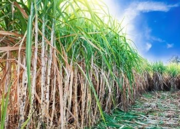
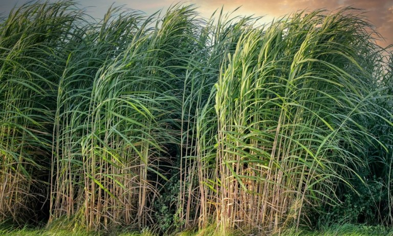
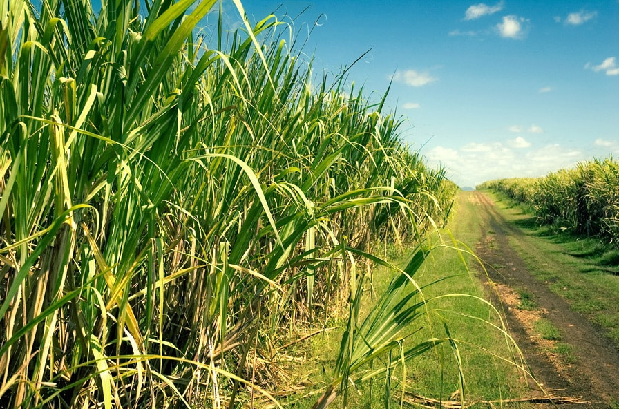
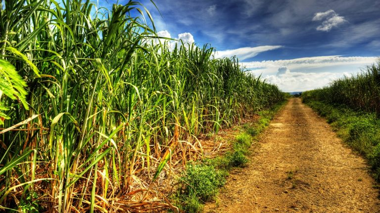
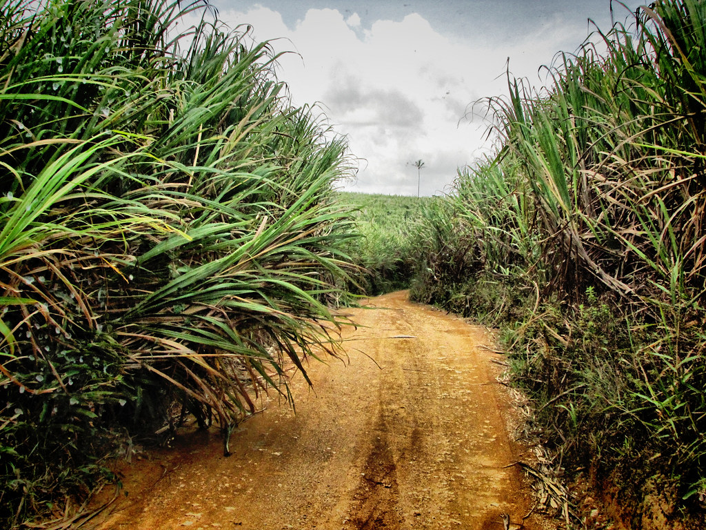
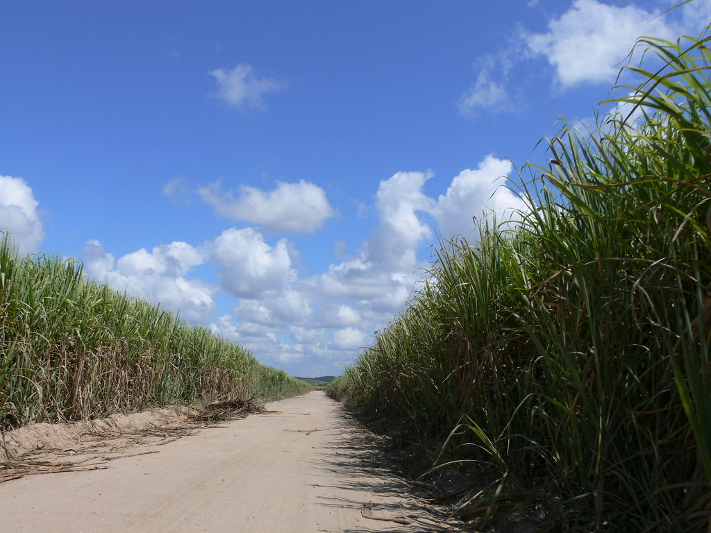
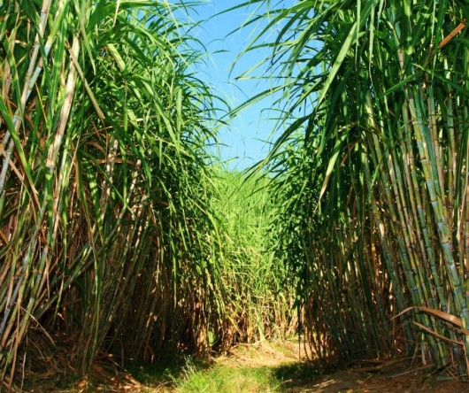
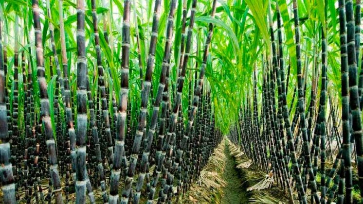
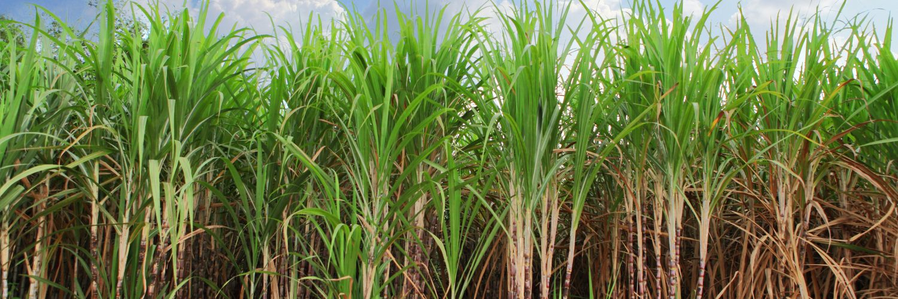

Variedade 1

Em breve este site estará com ricas informações referente as variedades existentes de cana e seus principais pontos fortes e aplicabilidade









Utilidades cana
O Brasil é o maior produtor mundial do setor, que tem ampliado as alternativas de fontes renováveis a partir de subprodutos como palha, bagaço, vinhaça e torta de filtro, parte sólida da filtração do caldo da cana. Clique no icone abaixo para fazer o download de um material sobre variedades de cana.